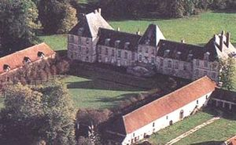
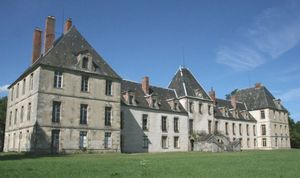
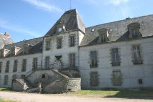
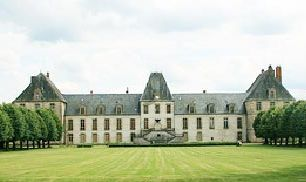
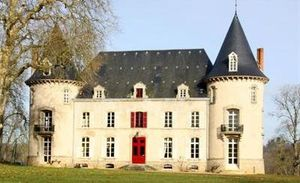
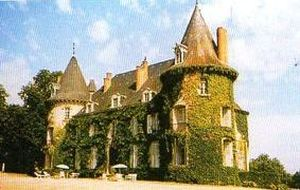
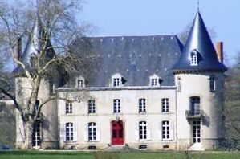
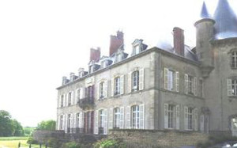

Recensement Jean-Claude Truffet
| Département | 03 — Allier |
| Canton | Lurcy-Lévis |
| Commune | Lurcy-Lévis |
| Type d'édifice | Château |
| Période d'origine | XV-XVII |








LEVIS, les châteaux et maisons des sires de Poligny, Béguin et Neureux, passe aux La Porte seigneur de Bannegon en indivis à deux filles, dont l' une épouse des de Barres , l'autre , Jean de Châteaumorand réuni le fief qui en 1422 passe aux Levis par alliance d'Agnès fille de Jean avec Brémond de Lévis, prit le nom et titre de baron de Charlus et de Poligny, restera dans cette famille jusqu'en 1723 date à laquelle Levis est érigée en Duché-Pairie, Le dernier mâle des Levis décède en 1734 l'héritage revient à l'une de ses filles qui épouse en 1738 le marquis de Castries et qui le revent en 1752 à Jacques de Hardouin Mansards de Sagonne, le château est saisi en 1759 adjugé à André de Sinety gouverneur des enfants de France et a madame Greffulhe aux Castellane il fut acheté par monsieur Fould dont la fille épousa monsieur Thuret, puis par alliance avec la fille de Mr Thuret passa au comte Waldner de Freundstein, par cette famille Levis entra dans une famille noble d'Alsace.
NEUREUX, ancienne propriété du Roi Louis XV, En 1301, Guillaume d'Aubigny en rendit aveu. La famille le conserva jusqu'au XVIIe siècle. Il passa ensuite de main en main jusqu'à sa confiscation, en 1751, par le Roi et devint la résidence d'officiers des finances. En 1783, André de Sinety se porta acquéreur du château et des terres et les réunit à son domaine. Aujourd'hui hôtel restaurant, chambres d'hôtes Ce couple de hollandais Roland Kerbosch est un ancien producteur de cinéma et Valérie une ancienne danseuse étoile d'Amsterdam a eu le coup de foudre pour cette propriété, acquit en 2008.
Levis, c'était une véritable forteresse, avec un grand nombre de tours et tourelles. Une seule subsiste au niveau de l'enceinte. Après un incendie en 1744, le château fort fut reconstruit par Mansart de Jouy. Les deux pavillons d'angle datent de cette époque. Le pavillon central et les escaliers des deux façades ont été construits vers 1880. Aujourd'hui, c'est une grande construction à l'ordonnance classique, aux nombreuses fenêtres et lucarnes. L'entrée se fait par un escalier à double révolution, accolé au pavillon central, demeure du XVIIe siècle édifiée à l'emplacement de l'ancienne forteresse de Poligny, dont l'intérêt tient à la composition de l'ensemble, constitué d'une grande cour précédant le château avec des communs de chaque côté, les deux pavillons d'entrée, la chapelle, le château, le pont d'entrée franchissant des douves sur plan semi-circulaire, ainsi que les plantations de tilleuls. Le château se compose d'un corps central flanqué de deux ailes. A l'intérieur, quelques cheminées d'époque et une tapisserie d'époque François Ier. Neureux château avec tours aux angles dont deux ont été arasées, est le bâtiment le plus ancien de la commune de Lurcy. Ses domaines s'étendaient également sur Couleuvre. Il a entièrement été transformé au XVIIIe siècle. C'est aujourd'hui un grand bâtiment à deux niveaux et niveau de comble,deux tours rondes aux angles de la façade. Les nombreuses ouvertures sur les deux façades, disposées symétriquement, selon l'ordre néo-classique, sont à linteaux à arc surbaissé. Autant de lucarnes à jambages et frontons de pierre éclairent les combles.
Famille de Brémond de Lévis Famille d'André de Sinety"
Château de Levis et de Neureux à Lurcy-Levis